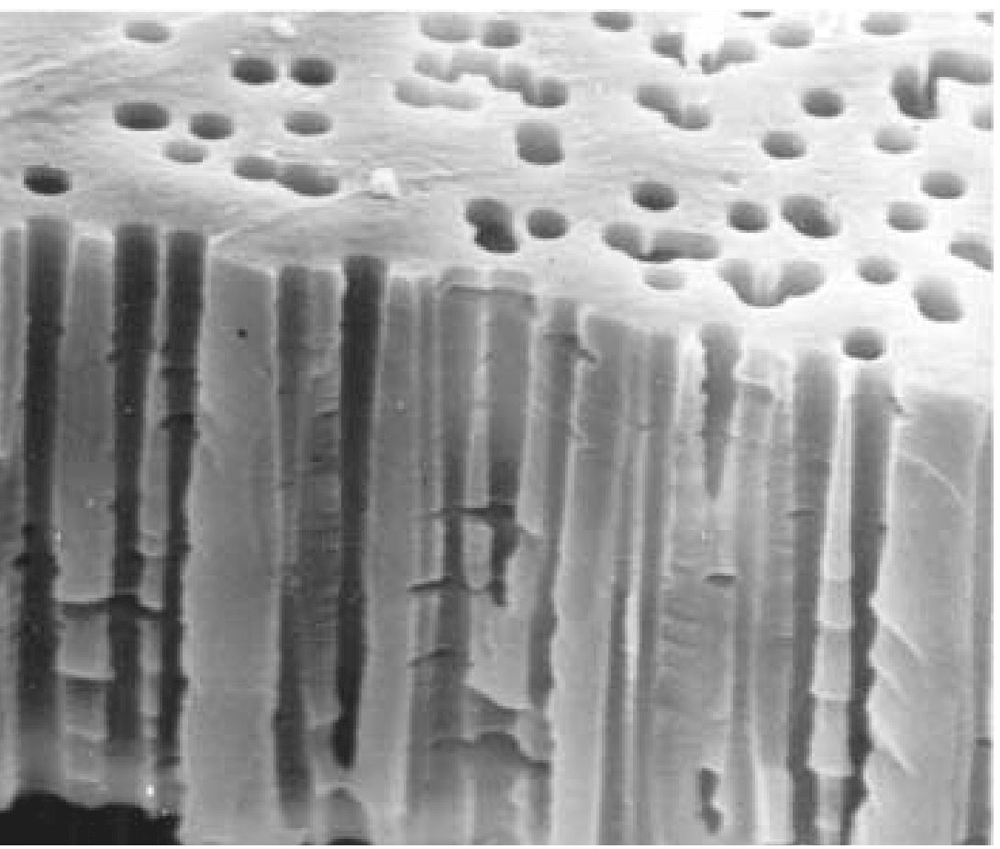

Flow and Fouling in a Pleated Membrane Filter
| Pleated membrane filters are widely used in many applications, and offer significantly better surface area to volume ratios than equal-area unpleated membrane filters. However, their filtration characteristics are markedly inferior to those of equivalent unpleated membrane filters in dead-end filtration. While several hypotheses have been advanced for this, one possibility is that the flow field induced by the pleating leads to spatially non-uniform fouling of the filter, which in turn degrades performance. In this work we investigate this hypothesis by developing a simplified model for the flow and fouling within a pleated membrane filter. Our model accounts for the pleated membrane geometry (which affects the flow), for porous support layers surrounding the membrane, and for two membrane fouling mechanisms: (i) adsorption of very small particles within membrane pores; and (ii) blocking of entire pores by large particles. We use asymptotic techniques based on the small pleat aspect ratio to solve the model, and we compare solutions to those for the closest-equivalent unpleated filter. |  |
Flow and Fouling in Membrane Filters: Effects of Membrane Morphology
| Membrane filters are used extensively in microfiltration applications. The type of membrane used can vary widely depending on the particular application, but broadly speaking the requirements are to achieve fine control of separation, with low power consumption. The solution to this challenge might seem obvious: select the membrane with the largest pore size and void fraction consistent with the separation requirements. However, membrane fouling (an inevitable consequence of successful filtration) is a complicated process, which depends on many parameters other than membrane-pore size and void fraction; and which itself greatly affects the filtration process and membrane functionality. In this work we formulate mathematical models that can (i) account for the membrane internal morphology (internal structure, pore size and shape, etc.); (ii) describe fouling of membranes with specific morphology; and (iii) make some predictions as to what type of membrane morphology might offer optimum filtration performance. |  |